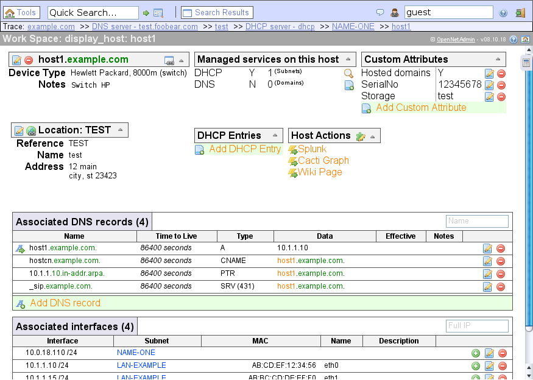
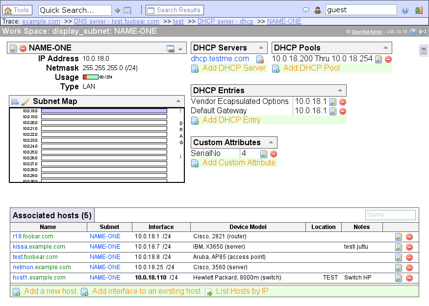
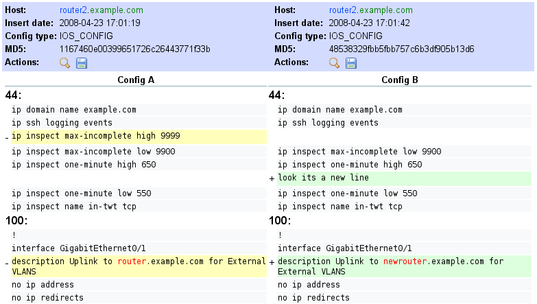
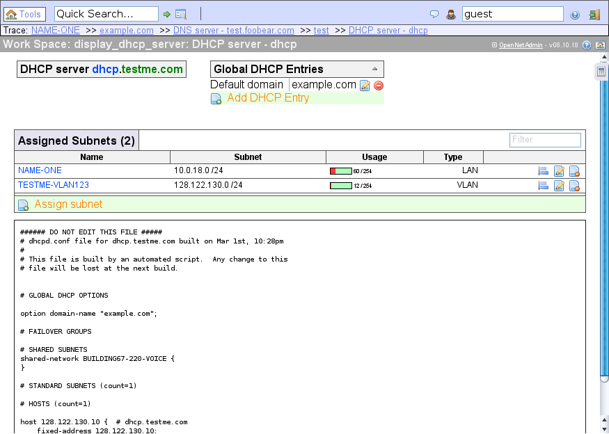
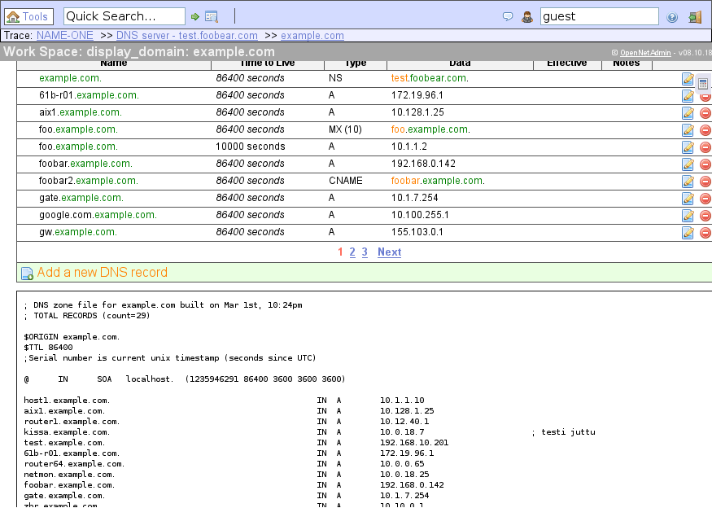
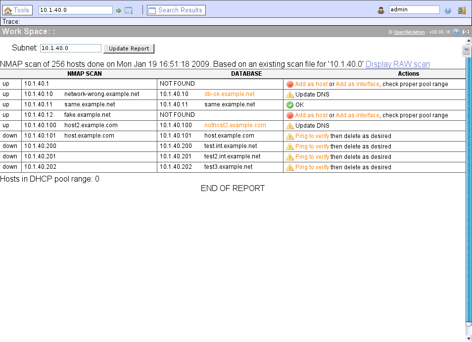

Features
- Storage of network attributes such as (subnets, IP address, Mac address, DNS names etc)
- It's not a spreadsheet
- Plugin framework that allows new functionality to be added by 3rd party plugins.
- Plugin framework for various authentication backends. Currently available auth backends are LDAP and local.
- DNS record support (A, CNAME, PTR, NS, MX, TXT, SRV, More to come)
- DNS view support. Allows you to track overlapping namespaces for situations such as publicand private DNS services
- Multiple contexts. Simply allows one OpenNetAdmin installation utilize two seperate sets of database backends that can easily be switched between. This can be used to track MPLS networks that would otherwise have overlapping information in them.
- AJAX enabled web frontend, provides a responsive desktop-like experience
- ADODB Database abstraction layer. Allows you to use many database backends for data. (only tested with MySQL)
- Full command line interface for scripting and batch maintenance. Local or remote capabilities.
- Templated configuration generation from data stored in the database. Utilizes the template_merge process.
- Ohh, and it's not a spreadsheet
- Generation of DNS and DHCP server configuration, can manage distributed servers.
- Scalability: we have run this system with the following data on a 400mhz PPC server with 2 gigs of memory
| Subnets | 40,000+ |
| Hosts | 670,000+ |
| IP Interfaces | 721,000+ |
| DNS zones | 2700+ |
| Historical Cisco configuration archives | 13,000+ devices |
- Track CIDR blocks as well as arbitrary IP address ranges for categorizing sections of your network.
- Track VLAN Campuses (VTP/VMPS domains) and VLAN assignments per subnet.
- Manage your own custom list of device manufacturers and models that relate to your environment. Or use pre-defined lists of common devices (more device "packs" to come).
- Track a "role" for your devices. I.E. a cisco 6500 could have a role of "switch", "router", "router/switch", "corporate core" or any other role you decide to allocate.
- Track DHCP pool failover groups. You can assign servers to any number of failover group pairings, then assign the appropriate subnets to those failover groups.
- Track per device configuration archives with the ability to store many entries and compare them usinga syntax highlighting "diff" comparison. I.E. archive the contents of a "show run" or "show version" command for each router to keep configuration history. Similar to Rancid. Click here for an example
- Locally stored user and group authentication and authorization. You can define your own groups with pre-determined access rights for common tasks such as adding or deleting hosts.
- Track "Shared IPs" such as those in use by HSRP, VRRP, CARP and other virtual interfaces that could be associated with multiple hosts at the same time.
- Support for quickly moving an IP address from one host to another, no need to delete then re-add.
- Subnets display a quick usage bar indicating a percentage and count of the utilization of that subnetbased on hosts and pool allocations.
- Subnet maps for highlevel block allocation views. Also allows you to drag the view window (think google maps) to see what is allocated.
- Manage multiple DHCP pools per subnet.
- Per device or subnet messages to track events. For instance, you can tie an alerting system or any other type of notification to a host to create a message that would be visible if someone selects that device.
- System wide messages to alert all users in the system of important information. All messages include a timestamp, username and severity as well as an expiration date.
- Create your own "host actions". Host actions are user defined URL links to other applications with primary host name or IP address as part of the URL. Allows you to directly link a host lookup within Splunk, Nagios, Cacti, Base, etc.
- External linking is available to link from external apps directly into a specific record. For example
http://localhost/ona/?search=host1.example.com will pull up the display for host1.example.com.
- Per record DNS TTLs or let it default to the domains default TTL.
- Quick filter any of the list dialogs. For example, if you have done a search on the subnet name "LAN-%" you can then filter that resulting list further by entering .desktop. in the filter box. As you type the list will automaticallyfilter via the AJAX backend system.
- All MAC address maintenance will take any MAC format such as "12:34:56:AB:CD:EF", "1234.56AB.CDEF", "12-34-56-AB-CD-EF", or "123456ABCDEF". No more re-formating the text in the edit form, simply cut and paste and it will be converted to a consistent format automatically.
- Reference subnet masks in either the full octet based format or their CIDR representation.
- Manage your own DHCP Option types or use one of the built in standard options.
- Most tasks are one or two clicks away. No need to navigate all through the interface to do one simpletask. Many tasks can be done without even leaving the current screen or display.
- NAT translation tracking
- Custom attribute tracking
- Simple location tracking per device. Location name, street address, etc
- Rack management plugin. Track your servers location within your datacenter racks.
- A user definable reporting engine to display various sets of information defined for your needs. Currently SQL queries can be written and stored with a simple interface for creating and displaying the results. More work to be done on this item however.
Features in progress
- IPv6 subnets and interfaces are currently working. Adding DNS and blocks with block maps are also working. There is still more testing to be done before full release. If you are interested in testing IPv6 you can check out our IPv6 development branch.
- Integration with Puppet and MCollective
- Continuing work on DNS and DHCP configuration management
- Continuing work on text configuration archive and diff comparison. Works with any text configuration.
- Virtual host tracking. I.E. one physical device (chassis) can be defined that has multiple hosts associated with it. This allows you to track the relationship of a single server (possibly named vm-server.example.com) that houses several other virtual hosts on it.
- Display DHCP pool allocation information inline using DHCPLEASEQUERY. You will see IP address, MAC address, and DNS name (via reverse lookup of dynamically registered entry if it exists.)
- Auto discovery tools to help populate your database. Currently have parsers for tinydns config files,dhcpd.conf, "show route" commands, nmap scans etc.
- Physical device tracking information such as serial number and asset tag info.
Future Goals
- Add support and backend integration for NETCONF
- Add a network diagram generator that would output int dot format to generate images using Graphviz
- Add modules that allow you to track physical port connections. I.E. PC-A port eth0 is connected to port fast1/20 on switch-B
- Add modules that allow tracking of other types of connections such as frame-relay circuits with PVCs,and ATM VPI/VCI connections. Map out and track your WAN network, not just the subnets and IPs that are in use.
- Internationalization. English only at the moment but I hope to build the framework for other languages.
|
Screenshots

Desktop (dashboard)

Display host

Display subnet

Config archive

DHCP server

Display DNS zone

Network scan report
|

{kind=link}
{kind=link}
{kind=link}
{kind=link}
{kind=link}
{kind=link}